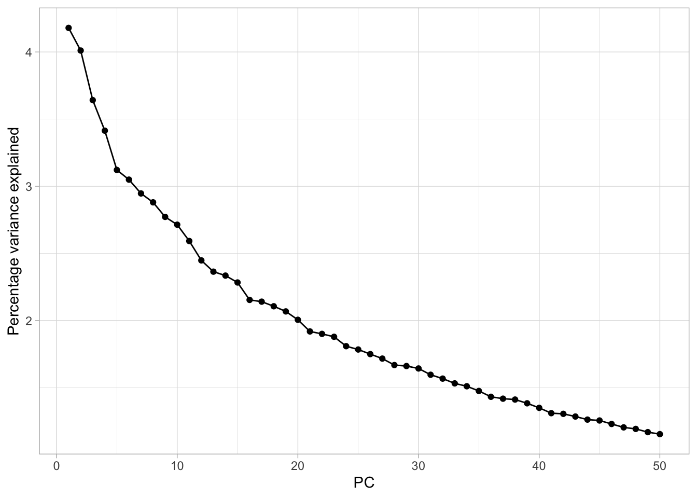

Chapter 3 GWAS Tools and Data Preprocessing Workflow with Toy Example
This notebook demonstrates a standard approach to conduct the genome wide association study (GWAS) using toy example datasets. The procedures consist of four steps:
- Quality Control
- Imputation
- Population Stratification Correction
- Simple Association Test
The data used for this example is a toy genotype data containing 5 random SNPs and a random phenotype data with covariates.
We use both bash and R codes in this notebook. The type of programming language is labeled at the top of each code cell.
Special notes for Windows users: Windows has two command-line shells, Command shell and Windows Powershell. Command shell is specific to Windows system and can be run from “Command Prompt” App, but the language it uses is NOT the same as Bash! Powershell App is the app to run Bash commands in Windows. Therefore if you are Windows users and use RStudio for this course, please refer to Chapter 1 for setting up RStudio Terminal for running bash codes or ask for help.
3.1 Environment Setting
Before we can run any analysis, we need to set the working directory path to the downloaded “cshl_gwas” folder for both Terminal and Console in RStudio. Below are the codes to setup paths at both places. These paths have to be setup correctly at first, otherwise we can’t locate the correct input files.
3.2 GWAS Tools
We will use two main program tools in this notebook, PLINK (version 1.9) and IMPUTE2.
PLINK (version 1.9) is used for quality control and perform association test for large scale genotype data. You can find the .zip files suitable for your laptop system in “cshl_gwas/Tools/PLINK” and unzip it to call the plink program in the folder.
IMPUTE2 is used for genotype imputation and haplotype phasing. You can download its program using this link. IMPUTE2 program is only available to run in Linux or macOS system. You can find the zipped installation file in “cshl_gwas/Tools/IMPUTE2”. If you want to perform imputation for your own data, you also need to download the required reference genome from the above link. But in this notebook will only use the example genome.
We will also introduce a tool called MAGMA for gene-set analysis in later chapters.
Important: If you want to run these programs on your laptop, please make sure you have unzipped the installation packages in “./cshl_gwas/Tools” that is suitable for your laptop systerm. We will directly call PLINK and IMPUTE2 programs using abusolute or relative paths.
Instructions on installing these two tools can be found on in Chapter 1.
After you cloned the repository “cshl_gwas” folder, you can find the Tools folder contatining installation packages for different systems. Then, you can unzip the zip files and call the programs by specifying its absolute path. For example, for macOS users, you can unzip the installer by double clicking, and call PLINK using /path/to/cshl_gwas/Tools/PLINK/plink_mac_20231211/plink; for Windows users, you need to unzip the package “plink_win64.zip” with right click->“Extract All…”. Then you can call PLINK with /path/to/cshl_gwas/Tools/PLINK/plink_win64_20231211/plink.exe.
You should modify the above /path/to/cshl_gwas to where your “cshl_gwas” folder is.
However, macOS users need to go through additional steps to authorize PLINK, IMPUTE2 and MAGMA programs before you can call them! But you can perform these authorization steps only when you need to call the programs. See below.
When you try to call PLINK, IMPUTE2 and MAGMA with the above commands, you might get a pop-up window with the following message “plink” cannot be opened because the developer cannot be verified. Select “Cancel” and we will authorize PLINK first. Please go to macOS “System Settings”->“Privacy & Security”, and scroll down until you see a message “plink” was blocked from use because it is not from an identified developer. Click “Allow Anyway” and you will be prompt to enter your Mac username and password. Click “Unlock” and then “Allow Anyway” again, and the previous message will disappear. Then try to run the same codes again in RStudio Terminal. You will get another pop-up window saying macOS cannot verify the developer of “plink”. Are you sure you want to open it?, select “Open” then you can see PLINK or IMPUTE2 commands options show up in Terminal.
3.3 Quality Control
PLINK will generate a number of standard summary statistics that are useful for quality control (e.g. missing genotype rate, minor allele frequency, Hardy-Weinberg equilibrium test and non-Mendelian transmission rate). These can also be used as thresholds for subsequent analyses. For more detailed information about plink, please refer its website https://www.cog-genomics.org/plink/1.9/.
The following is a list of some common options that can be used to filter out individuals or SNPs on the basis of the summary statistic measures:
tabl <- "
| Feature inclusion criteria | As summary statistic | As inclusion criteria |
|----------------------------|-----------------------|-----------------------|
| Missingness per individual |`--missing` |`--mind N`. |
| Missingness per marker | --missing | --geno N |
| Allele frequency | --freq | --maf N |
| Hardy-Weinberg equilibrium |--hardy | --hwe N |
"
cat(tabl) # output the table in a format good for HTML/PDF/docx conversion| Feature inclusion criteria | As summary statistic | As inclusion criteria |
|---|---|---|
| Missingness per individual | --missing |
--mind N. |
| Missingness per marker | –missing | –geno N |
| Allele frequency | –freq | –maf N |
| Hardy-Weinberg equilibrium | –hardy | –hwe N |
3.3.1 An Example of Summary Statistics
3.3.1.1 Input files
Input files: in folder ./Data/QC– We will use a random selected 5 SNPs as an example data:
- 5SNPs.ped
- 5SNPs.map
The PED file is a white-space delimited file.It contains no header line, and one line per sample with 6+2V fields where V is the number of variants. The first six columns are mandatory:
Family ID
Individual ID
Paternal ID
Maternal ID
Sex (1=male; 2=female; other=unknown)
PhenotypeThe seventh and eighth fields are allele calls for the first variant in the .map file (‘0’ = no call); the 9th and 10th are allele calls for the second variant; and so on.
## 1 206-001 0 0 1 0 A A G G G G G G A A
## 2 206-003 0 0 1 0 A A G G G G G G A A
## 3 206-004 0 0 1 0 A A G G G G G G A A
## 4 206-014 0 0 1 0 A A G G G G G G A A
## 5 206-015 0 0 1 0 A G A G A G A G A A
## 6 206-016 0 0 1 0 A G A G A G A G A A
## 7 206-018 0 0 1 0 A A G G G G G G A A
## 8 206-019 0 0 1 0 A A A G A G A G A G
## 9 206-021 0 0 1 0 A A G G G G G G A A
## 10 206-023 0 0 1 0 A G A G A G A G A ABy default, each line of the MAP file describes a single marker and must contain exactly 4 columns:
chromosome (1-22, X, Y or 0 if unplaced)
rs# or snp identifier
Genetic distance (morgans)
Base-pair position (bp units)
## 1 rs3094315 0 752566
## 1 rs2073813 0 753541
## 1 rs3131969 0 754182
## 1 rs3131967 0 754334
## 1 rs77598327 0 757120Three types of summary statistics that we are going to calculate using PLINK:
- missingness checking
- allele frequencies
- hardy-weinberg
All results generated from the following commands are saved in folder ./Data/QC. You can open the files in this folder to view the data structure.
3.3.1.2 Calculating missing rate
The following commands compute the missingness for each SNP and each subject. (The output will print all calculation progress generated by PLINK.)
- –noweb, suppress the connection to internet for version check.
- –file, specify the input files.
- –missing, calculate the number of missing and missing rate.
- –out, specify the output file name.
# both Mac and Windows can run in Terminal
# modify the path to "plink" program
# for windows users
./Tools/PLINK/plink_win64_20231211/plink.exe \
--noweb --file ./Data/QC/5SNPs --missing --out ./Data/QC/younameit# for macoS users
./Tools/PLINK/plink_mac_20231211/plink \
--noweb --file ./Data/QC/5SNPs --missing --out ./Data/QC/younameit## PLINK v1.90b7.2 64-bit (11 Dec 2023) www.cog-genomics.org/plink/1.9/
## (C) 2005-2023 Shaun Purcell, Christopher Chang GNU General Public License v3
## Logging to ./Data/QC/younameit.log.
## Options in effect:
## --file ./Data/QC/5SNPs
## --missing
## --noweb
## --out ./Data/QC/younameit
##
## Note: --noweb has no effect since no web check is implemented yet.
## 16384 MB RAM detected; reserving 8192 MB for main workspace.
## Scanning .ped file... 0%1%1%1%1%2%2%2%3%3%3%3%4%4%4%5%5%5%5%6%6%6%7%7%7%7%8%8%8%9%9%9%9%10%10%10%11%11%11%11%12%12%12%13%13%13%13%14%14%14%15%15%15%15%16%16%16%17%17%17%17%18%18%18%19%19%19%19%20%20%20%21%21%21%21%22%22%22%23%23%23%23%24%24%24%25%25%25%25%26%26%26%27%27%27%27%28%28%28%29%29%29%29%30%30%30%31%31%31%32%32%32%32%33%33%33%34%34%34%34%35%35%35%36%36%36%37%37%37%37%38%38%38%39%39%39%39%40%40%40%41%41%41%41%42%42%42%43%43%43%44%44%44%44%45%45%45%46%46%46%46%47%47%47%48%48%48%49%49%49%49%50%50%50%51%51%51%51%52%52%52%53%53%53%53%54%54%54%55%55%55%56%56%56%56%57%57%57%58%58%58%58%59%59%59%60%60%60%61%61%61%61%62%62%62%63%63%63%63%64%64%64%65%65%65%66%66%66%66%67%67%67%68%68%68%68%69%69%69%70%70%70%70%71%71%71%72%72%72%73%73%73%73%74%74%74%75%75%75%75%76%76%76%77%77%77%78%78%78%78%79%79%79%80%80%80%80%81%81%81%82%82%82%83%83%83%83%84%84%84%85%85%85%85%86%86%86%87%87%87%87%88%88%88%89%89%89%90%90%90%90%91%91%91%92%92%92%92%93%93%93%94%94%94%95%95%95%95%96%96%96%97%97%97%97%98%98%98%99%99%99%100%.ped scan complete (for binary autoconversion).
## Performing single-pass .bed write (5 variants, 344 people).
## 0%1%2%3%4%5%6%7%8%9%10%11%12%13%14%15%16%17%18%19%20%21%22%23%24%25%26%27%28%29%30%31%32%33%34%35%36%37%38%39%40%41%42%43%44%45%46%47%48%49%50%51%52%53%54%55%56%57%58%59%60%61%62%63%64%65%66%67%68%69%70%71%72%73%74%75%76%77%78%79%80%81%82%83%84%85%86%87%88%89%90%91%92%93%94%--file: ./Data/QC/younameit-temporary.bed + ./Data/QC/younameit-temporary.bim +
## ./Data/QC/younameit-temporary.fam written.
## 5 variants loaded from .bim file.
## 344 people (281 males, 0 females, 63 ambiguous) loaded from .fam.
## Ambiguous sex IDs written to ./Data/QC/younameit.nosex .
## Using 1 thread (no multithreaded calculations invoked).
## Before main variant filters, 344 founders and 0 nonfounders present.
## Calculating allele frequencies... 0%1%2%3%4%5%6%7%8%9%10%11%12%13%14%15%16%17%18%19%20%21%22%23%24%25%26%27%28%29%30%31%32%33%34%35%36%37%38%39%40%41%42%43%44%45%46%47%48%49%50%51%52%53%54%55%56%57%58%59%60%61%62%63%64%65%66%67%68%69%70%71%72%73%74%75%76%77%78%79%80%81%82%83%84%85%86%87%88%89%90%91%92%93%94%95%96%97%98%99% done.
## Total genotyping rate is 0.976744.
## --missing: Sample missing data report written to ./Data/QC/younameit.imiss, and
## variant-based missing data report written to ./Data/QC/younameit.lmiss.This option creates two output files in ‘results’ folder:
- “younameit.imiss”, missingness by individual.
- “younameit.lmiss”, missingness by SNP.
For individuals “.imiss” file, the format is:
FID Family ID
IID Individual ID
MISS_PHENO Missing phenotype? (Y/N)
N_MISS Number of missing SNPs
N_GENO Number of non-obligatory missing genotypes
F_MISS Proportion of missing SNPs# bash codes- run in Terminal
# Windows user need to run in Powershell App
head ./Data/QC/younameit.imiss## FID IID MISS_PHENO N_MISS N_GENO F_MISS
## 1 206-001 Y 0 5 0
## 2 206-003 Y 0 5 0
## 3 206-004 Y 0 5 0
## 4 206-014 Y 0 5 0
## 5 206-015 Y 0 5 0
## 6 206-016 Y 0 5 0
## 7 206-018 Y 0 5 0
## 8 206-019 Y 0 5 0
## 9 206-021 Y 0 5 0For SNP “lmiss” file, the format is:
SNP SNP identifier
CHR Chromosome number
N_MISS Number of individuals missing this SNP
N_GENO Number of non-obligatory missing genotypes
F_MISS Proportion of sample missing for this SNP# bash codes- run in terminal
# Windows user need to run in Powershell App
head ./Data/QC/younameit.lmiss## CHR SNP N_MISS N_GENO F_MISS
## 1 rs3094315 2 344 0.005814
## 1 rs2073813 14 344 0.0407
## 1 rs3131969 11 344 0.03198
## 1 rs3131967 3 344 0.008721
## 1 rs77598327 10 344 0.029073.3.1.3 Calculating allel frequencies
The following command computes the allele frequencies. (The output will print all calculation progress generated by PLINK.)
1. –freq, calculate the allele frequencies.
# both Mac and Windows can run in Terminal
# modify the path to "plink" program
# Windows user
./Tools/PLINK/plink_win64_20231211/plink.exe \
--noweb --file ./Data/QC/5SNPs --freq --out ./Data/QC/younameit# macOS user
./Tools/PLINK/plink_mac_20231211/plink \
--noweb --file ./Data/QC/5SNPs --freq --out ./Data/QC/younameit## PLINK v1.90b7.2 64-bit (11 Dec 2023) www.cog-genomics.org/plink/1.9/
## (C) 2005-2023 Shaun Purcell, Christopher Chang GNU General Public License v3
## Logging to ./Data/QC/younameit.log.
## Options in effect:
## --file ./Data/QC/5SNPs
## --freq
## --noweb
## --out ./Data/QC/younameit
##
## Note: --noweb has no effect since no web check is implemented yet.
## 16384 MB RAM detected; reserving 8192 MB for main workspace.
## Scanning .ped file... 0%1%1%1%1%2%2%2%3%3%3%3%4%4%4%5%5%5%5%6%6%6%7%7%7%7%8%8%8%9%9%9%9%10%10%10%11%11%11%11%12%12%12%13%13%13%13%14%14%14%15%15%15%15%16%16%16%17%17%17%17%18%18%18%19%19%19%19%20%20%20%21%21%21%21%22%22%22%23%23%23%23%24%24%24%25%25%25%25%26%26%26%27%27%27%27%28%28%28%29%29%29%29%30%30%30%31%31%31%32%32%32%32%33%33%33%34%34%34%34%35%35%35%36%36%36%37%37%37%37%38%38%38%39%39%39%39%40%40%40%41%41%41%41%42%42%42%43%43%43%44%44%44%44%45%45%45%46%46%46%46%47%47%47%48%48%48%49%49%49%49%50%50%50%51%51%51%51%52%52%52%53%53%53%53%54%54%54%55%55%55%56%56%56%56%57%57%57%58%58%58%58%59%59%59%60%60%60%61%61%61%61%62%62%62%63%63%63%63%64%64%64%65%65%65%66%66%66%66%67%67%67%68%68%68%68%69%69%69%70%70%70%70%71%71%71%72%72%72%73%73%73%73%74%74%74%75%75%75%75%76%76%76%77%77%77%78%78%78%78%79%79%79%80%80%80%80%81%81%81%82%82%82%83%83%83%83%84%84%84%85%85%85%85%86%86%86%87%87%87%87%88%88%88%89%89%89%90%90%90%90%91%91%91%92%92%92%92%93%93%93%94%94%94%95%95%95%95%96%96%96%97%97%97%97%98%98%98%99%99%99%100%.ped scan complete (for binary autoconversion).
## Performing single-pass .bed write (5 variants, 344 people).
## 0%1%2%3%4%5%6%7%8%9%10%11%12%13%14%15%16%17%18%19%20%21%22%23%24%25%26%27%28%29%30%31%32%33%34%35%36%37%38%39%40%41%42%43%44%45%46%47%48%49%50%51%52%53%54%55%56%57%58%59%60%61%62%63%64%65%66%67%68%69%70%71%72%73%74%75%76%77%78%79%80%81%82%83%84%85%86%87%88%89%90%91%92%93%94%--file: ./Data/QC/younameit-temporary.bed + ./Data/QC/younameit-temporary.bim +
## ./Data/QC/younameit-temporary.fam written.
## 5 variants loaded from .bim file.
## 344 people (281 males, 0 females, 63 ambiguous) loaded from .fam.
## Ambiguous sex IDs written to ./Data/QC/younameit.nosex .
## Using 1 thread (no multithreaded calculations invoked).
## Before main variant filters, 344 founders and 0 nonfounders present.
## Calculating allele frequencies... 0%1%2%3%4%5%6%7%8%9%10%11%12%13%14%15%16%17%18%19%20%21%22%23%24%25%26%27%28%29%30%31%32%33%34%35%36%37%38%39%40%41%42%43%44%45%46%47%48%49%50%51%52%53%54%55%56%57%58%59%60%61%62%63%64%65%66%67%68%69%70%71%72%73%74%75%76%77%78%79%80%81%82%83%84%85%86%87%88%89%90%91%92%93%94%95%96%97%98%99% done.
## Total genotyping rate is 0.976744.
## --freq: Allele frequencies (founders only) written to ./Data/QC/younameit.frq .This command will create a output file “younameit.frq” with six columns:
CHR Chromosome
SNP SNP identifier
A1 Allele 1 code (minor allele)
A2 Allele 2 code (major allele)
MAF Minor allele frequency
NCHROBS Non-missing allele count# bash codes- run in terminal
# Windows user need to run in Powershell App
head ./Data/QC/younameit.frq## CHR SNP A1 A2 MAF NCHROBS
## 1 rs3094315 G A 0.07749 684
## 1 rs2073813 A G 0.2242 660
## 1 rs3131969 A G 0.2387 666
## 1 rs3131967 A G 0.2082 682
## 1 rs77598327 G A 0.1228 6683.3.1.4 Hardy-Weinberg Equilibrium
The following command computes the Hardy-Weiberg exact test statistic. (The output will print all calculation progress generated by PLINK.)
1. –hardy, perform hardy-weinberg test.
# both Mac and Windows can run in Terminal
# modify the path to "plink" program
# Windows user
./Tools/PLINK/plink_win64_20231211/plink.exe \
--noweb --file ./Data/QC/5SNPs --hardy --out ./Data/QC/younameit# macOS user
./Tools/PLINK/plink_mac_20231211/plink \
--noweb --file ./Data/QC/5SNPs --hardy --out ./Data/QC/younameit## PLINK v1.90b7.2 64-bit (11 Dec 2023) www.cog-genomics.org/plink/1.9/
## (C) 2005-2023 Shaun Purcell, Christopher Chang GNU General Public License v3
## Logging to ./Data/QC/younameit.log.
## Options in effect:
## --file ./Data/QC/5SNPs
## --hardy
## --noweb
## --out ./Data/QC/younameit
##
## Note: --noweb has no effect since no web check is implemented yet.
## 16384 MB RAM detected; reserving 8192 MB for main workspace.
## Scanning .ped file... 0%1%1%1%1%2%2%2%3%3%3%3%4%4%4%5%5%5%5%6%6%6%7%7%7%7%8%8%8%9%9%9%9%10%10%10%11%11%11%11%12%12%12%13%13%13%13%14%14%14%15%15%15%15%16%16%16%17%17%17%17%18%18%18%19%19%19%19%20%20%20%21%21%21%21%22%22%22%23%23%23%23%24%24%24%25%25%25%25%26%26%26%27%27%27%27%28%28%28%29%29%29%29%30%30%30%31%31%31%32%32%32%32%33%33%33%34%34%34%34%35%35%35%36%36%36%37%37%37%37%38%38%38%39%39%39%39%40%40%40%41%41%41%41%42%42%42%43%43%43%44%44%44%44%45%45%45%46%46%46%46%47%47%47%48%48%48%49%49%49%49%50%50%50%51%51%51%51%52%52%52%53%53%53%53%54%54%54%55%55%55%56%56%56%56%57%57%57%58%58%58%58%59%59%59%60%60%60%61%61%61%61%62%62%62%63%63%63%63%64%64%64%65%65%65%66%66%66%66%67%67%67%68%68%68%68%69%69%69%70%70%70%70%71%71%71%72%72%72%73%73%73%73%74%74%74%75%75%75%75%76%76%76%77%77%77%78%78%78%78%79%79%79%80%80%80%80%81%81%81%82%82%82%83%83%83%83%84%84%84%85%85%85%85%86%86%86%87%87%87%87%88%88%88%89%89%89%90%90%90%90%91%91%91%92%92%92%92%93%93%93%94%94%94%95%95%95%95%96%96%96%97%97%97%97%98%98%98%99%99%99%100%.ped scan complete (for binary autoconversion).
## Performing single-pass .bed write (5 variants, 344 people).
## 0%1%2%3%4%5%6%7%8%9%10%11%12%13%14%15%16%17%18%19%20%21%22%23%24%25%26%27%28%29%30%31%32%33%34%35%36%37%38%39%40%41%42%43%44%45%46%47%48%49%50%51%52%53%54%55%56%57%58%59%60%61%62%63%64%65%66%67%68%69%70%71%72%73%74%75%76%77%78%79%80%81%82%83%84%85%86%87%88%89%90%91%92%93%94%--file: ./Data/QC/younameit-temporary.bed + ./Data/QC/younameit-temporary.bim +
## ./Data/QC/younameit-temporary.fam written.
## 5 variants loaded from .bim file.
## 344 people (281 males, 0 females, 63 ambiguous) loaded from .fam.
## Ambiguous sex IDs written to ./Data/QC/younameit.nosex .
## Using 1 thread (no multithreaded calculations invoked).
## Before main variant filters, 344 founders and 0 nonfounders present.
## Calculating allele frequencies... 0%1%2%3%4%5%6%7%8%9%10%11%12%13%14%15%16%17%18%19%20%21%22%23%24%25%26%27%28%29%30%31%32%33%34%35%36%37%38%39%40%41%42%43%44%45%46%47%48%49%50%51%52%53%54%55%56%57%58%59%60%61%62%63%64%65%66%67%68%69%70%71%72%73%74%75%76%77%78%79%80%81%82%83%84%85%86%87%88%89%90%91%92%93%94%95%96%97%98%99% done.
## Total genotyping rate is 0.976744.
## --hardy: Writing Hardy-Weinberg report (founders only) to
## ./Data/QC/younameit.hwe ... 0%0%1%2%3%4%5%6%7%8%9%10%11%12%13%14%15%16%17%18%19%20%21%22%23%24%25%26%27%28%29%30%31%32%33%34%35%36%37%38%39%40%41%42%43%44%45%46%47%48%49%50%51%52%53%54%55%56%57%58%59%60%61%62%63%64%65%66%67%68%69%70%71%72%73%74%75%76%77%78%79%80%81%82%83%84%85%86%87%88%89%90%91%92%93%94%95%96%97%98%99%done.This command will create an output file “younameit.hwe” with the following columns:
CHR Chromosome
SNP SNP identifier
TEST Code indicating whether the sample is a case or control
A1 Minor allele code
A2 Major allele code
GENO Genotype counts: 11/12/22
O(HET) Observed heterozygosity
E(HET) Expected heterozygosity
P P-value for Hardy-Weinberg test# bash codes- run in terminal
# Windows user need to run in Powershell App
head ./Data/QC/younameit.hwe## CHR SNP TEST A1 A2 GENO O(HET) E(HET) P
## 1 rs3094315 ALL(NP) G A 3/47/292 0.1374 0.143 0.4398
## 1 rs2073813 ALL(NP) A G 18/112/200 0.3394 0.3479 0.6366
## 1 rs3131969 ALL(NP) A G 24/111/198 0.3333 0.3635 0.1323
## 1 rs3131967 ALL(NP) A G 12/118/211 0.346 0.3297 0.4149
## 1 rs77598327 ALL(NP) G A 2/78/254 0.2335 0.2154 0.19843.3.2 An Example of Inclusion Thresholds for QC
Input files: in folder ./QC
5SNPs.ped
5SNPs.map
The following command performs multiple quality controls. (The output will print all calculation progress generated by PLINK.)
1. –mind 0.1, exclude the individuals with missing rate larger than 0.1. You can change 0.1 to other desired values.
2. –geno 0.1, exclude the SNPs with missing rate larger than 0.1. You can change 0.1 to other desiered values.
3. –maf 0.05, exclude the SNPs with minor allele frequency (MAF) smaller than 0.05. You can change 0.05 to other desiered values.
4. –hwe 0.001, exclude the SNPs with P-values of Hardy-Weinberg test smaller than 0.001. You can change it to otehr desired values.
5. –recode, generate a new dataset.
# both Mac and Windows can run in Terminal
# modify the path to "plink" program
# Windows user
./Tools/PLINK/plink_win64_20231211/plink.exe \
--noweb --file ./Data/QC/5SNPs \
--mind 0.1 --geno 0.1 --maf 0.05 --hwe 0.001 --recode --out ./Data/QC/younameit# macOS user
./Tools/PLINK/plink_mac_20231211/plink \
--noweb --file ./Data/QC/5SNPs \
--mind 0.1 --geno 0.1 --maf 0.05 --hwe 0.001 --recode --out ./Data/QC/younameit## PLINK v1.90b7.2 64-bit (11 Dec 2023) www.cog-genomics.org/plink/1.9/
## (C) 2005-2023 Shaun Purcell, Christopher Chang GNU General Public License v3
## Logging to ./Data/QC/younameit.log.
## Options in effect:
## --file ./Data/QC/5SNPs
## --geno 0.1
## --hwe 0.001
## --maf 0.05
## --mind 0.1
## --noweb
## --out ./Data/QC/younameit
## --recode
##
## Note: --noweb has no effect since no web check is implemented yet.
## 16384 MB RAM detected; reserving 8192 MB for main workspace.
## Scanning .ped file... 0%1%1%1%1%2%2%2%3%3%3%3%4%4%4%5%5%5%5%6%6%6%7%7%7%7%8%8%8%9%9%9%9%10%10%10%11%11%11%11%12%12%12%13%13%13%13%14%14%14%15%15%15%15%16%16%16%17%17%17%17%18%18%18%19%19%19%19%20%20%20%21%21%21%21%22%22%22%23%23%23%23%24%24%24%25%25%25%25%26%26%26%27%27%27%27%28%28%28%29%29%29%29%30%30%30%31%31%31%32%32%32%32%33%33%33%34%34%34%34%35%35%35%36%36%36%37%37%37%37%38%38%38%39%39%39%39%40%40%40%41%41%41%41%42%42%42%43%43%43%44%44%44%44%45%45%45%46%46%46%46%47%47%47%48%48%48%49%49%49%49%50%50%50%51%51%51%51%52%52%52%53%53%53%53%54%54%54%55%55%55%56%56%56%56%57%57%57%58%58%58%58%59%59%59%60%60%60%61%61%61%61%62%62%62%63%63%63%63%64%64%64%65%65%65%66%66%66%66%67%67%67%68%68%68%68%69%69%69%70%70%70%70%71%71%71%72%72%72%73%73%73%73%74%74%74%75%75%75%75%76%76%76%77%77%77%78%78%78%78%79%79%79%80%80%80%80%81%81%81%82%82%82%83%83%83%83%84%84%84%85%85%85%85%86%86%86%87%87%87%87%88%88%88%89%89%89%90%90%90%90%91%91%91%92%92%92%92%93%93%93%94%94%94%95%95%95%95%96%96%96%97%97%97%97%98%98%98%99%99%99%100%.ped scan complete (for binary autoconversion).
## Performing single-pass .bed write (5 variants, 344 people).
## 0%1%2%3%4%5%6%7%8%9%10%11%12%13%14%15%16%17%18%19%20%21%22%23%24%25%26%27%28%29%30%31%32%33%34%35%36%37%38%39%40%41%42%43%44%45%46%47%48%49%50%51%52%53%54%55%56%57%58%59%60%61%62%63%64%65%66%67%68%69%70%71%72%73%74%75%76%77%78%79%80%81%82%83%84%85%86%87%88%89%90%91%92%93%94%--file: ./Data/QC/younameit-temporary.bed + ./Data/QC/younameit-temporary.bim +
## ./Data/QC/younameit-temporary.fam written.
## 5 variants loaded from .bim file.
## 344 people (281 males, 0 females, 63 ambiguous) loaded from .fam.
## Ambiguous sex IDs written to ./Data/QC/younameit.nosex .
## 32 people removed due to missing genotype data (--mind).
## IDs written to ./Data/QC/younameit.irem .
## Using 1 thread (no multithreaded calculations invoked).
## Before main variant filters, 312 founders and 0 nonfounders present.
## Calculating allele frequencies... 0%1%2%3%4%5%6%7%8%9%10%11%12%13%14%15%16%17%18%19%20%21%22%23%24%25%26%27%28%29%30%31%32%33%34%35%36%37%38%39%40%41%42%43%44%45%46%47%48%49%50%51%52%53%54%55%56%57%58%59%60%61%62%63%64%65%66%67%68%69%70%71%72%73%74%75%76%77%78%79%80%81%82%83%84%85%86%87%88%89%90%91%92%93%94%95%96%97%98%99% done.
## Total genotyping rate in remaining samples is exactly 1.
## 0 variants removed due to missing genotype data (--geno).
## --hwe: 0 variants removed due to Hardy-Weinberg exact test.
## 0 variants removed due to minor allele threshold(s)
## (--maf/--max-maf/--mac/--max-mac).
## 5 variants and 312 people pass filters and QC.
## Note: No phenotypes present.
## --recode ped to ./Data/QC/younameit.ped + ./Data/QC/younameit.map ... 0%1%2%3%4%5%6%7%8%9%10%11%12%13%14%15%16%17%18%19%20%21%22%23%24%25%26%27%28%29%30%31%32%33%34%35%36%37%38%39%40%41%42%43%44%45%46%47%48%49%50%51%52%53%54%55%56%57%58%59%60%61%62%63%64%65%66%67%68%69%70%71%72%73%74%75%76%77%78%79%80%81%82%83%84%85%86%87%88%89%90%91%92%93%94%95%96%97%98%99%done.The output files will be “younameit.map” and “younameit.ped” which have been quality controlled by the criteria you specified.
3.4 An Imputation Example
In many cases, raw sequence data may have missing values. Then, an imputation step will be neccessary. IMPUTE2 is a popular software package for imputation. Below is a simple example for conducting imputation by IMPUTE2. For more information about IMPUTE2, please refer its website http://mathgen.stats.ox.ac.uk/impute/impute_v2.html and the associated publication http://journals.plos.org/plosgenetics/article?id=10.1371/journal.pgen.1000529
Here is the example provided by IMPUTE2 package. The link is https://mathgen.stats.ox.ac.uk/impute/impute_v2.html#ex1
Files used for example are saved in folder ./Data/impute2_example.
# bash codes- run in terminal
# IMPUTE2 only works for macOS or Linux users, Windows users can't run it
# macOS user only
# modify the path to "impute2" program
./Tools/IMPUTE2/impute_v2.3.2_MacOSX_Intel/impute2 \
-m ./Data/impute2_example/example.chr22.map \
-h ./Data/impute2_example/example.chr22.1kG.haps \
-l ./Data/impute2_example/example.chr22.1kG.legend \
-g ./Data/impute2_example/example.chr22.study.gens \
-strand_g ./Data/impute2_example/example.chr22.study.strand \
-int 20.4e6 20.5e6 -Ne 20000 \
-o ./Data/impute2_example/example.chr22.one.phased.impute2##
## ======================
## IMPUTE version 2.3.2
## ======================
##
## Copyright 2008 Bryan Howie, Peter Donnelly, and Jonathan Marchini
## Please see the LICENCE file included with this program for conditions of use.
##
## The seed for the random number generator is 1867707983.
##
## Command-line input: ./Tools/IMPUTE2/impute_v2.3.2_MacOSX_Intel/impute2 -m ./Data/impute2_example/example.chr22.map -h ./Data/impute2_example/example.chr22.1kG.haps -l ./Data/impute2_example/example.chr22.1kG.legend -g ./Data/impute2_example/example.chr22.study.gens -strand_g ./Data/impute2_example/example.chr22.study.strand -int 20.4e6 20.5e6 -Ne 20000 -o ./Data/impute2_example/example.chr22.one.phased.impute2
##
## ---------------------------------
## Nomenclature and data structure
## ---------------------------------
##
## Panel 0: phased reference haplotypes
## Panel 2: unphased study genotypes
##
## For optimal results, each successive panel (0,1,2) should contain a subset of the SNPs in the previous panel. When the data structure deviates from this ideal configuration, IMPUTE2 tries to use as much of the available information as possible; see documentation for details.
##
## -------------
## Input files
## -------------
##
## Panel 0 haplotypes: ./Data/impute2_example/example.chr22.1kG.haps
## Panel 0 hap legend: ./Data/impute2_example/example.chr22.1kG.legend
## Panel 2 genotypes: ./Data/impute2_example/example.chr22.study.gens
## Panel 2 strand info: ./Data/impute2_example/example.chr22.study.strand
## genetic map: ./Data/impute2_example/example.chr22.map
##
## --------------
## Output files
## --------------
##
## main output: ./Data/impute2_example/example.chr22.one.phased.impute2
## SNP QC info: ./Data/impute2_example/example.chr22.one.phased.impute2_info
## sample QC info: ./Data/impute2_example/example.chr22.one.phased.impute2_info_by_sample
## run summary: ./Data/impute2_example/example.chr22.one.phased.impute2_summary
## warning log: ./Data/impute2_example/example.chr22.one.phased.impute2_warnings
##
## -----------------
## Data processing
## -----------------
##
## -reading genetic map from -m file
## --filename=[./Data/impute2_example/example.chr22.map]
## --read 262 SNPs in the analysis interval+buffer region
##
## -reading strand info for Panel 2 from -strand_g file
## --filename=[./Data/impute2_example/example.chr22.study.strand]
## --read strand info for 33 SNPs in the analysis region
##
## -reading Panel 2 genotypes from -g file
## --filename=[./Data/impute2_example/example.chr22.study.gens]
## --detected 250 individuals
## --read 33 SNPs in the analysis interval+buffer region
##
## -using -strand_g file to align Panel 2 allele labels
## --flipped strand at 14 out of 33 SNPs
##
## -reading Panel 0 haplotypes from -h and -l files
## --filename=[./Data/impute2_example/example.chr22.1kG.haps]
## --filename=[./Data/impute2_example/example.chr22.1kG.legend]
## --detected 112 haplotypes
## --read 790 SNPs in the analysis interval+buffer region
##
## -removing SNPs that violate the hierarchical data requirements
## --no SNPs removed
##
## -removing reference-only SNPs from buffer region
## --removed 538 SNPs
##
## -checking strand alignment between Panel 2 and Panel 0 by allele labels
## --flipped strand due to allele mismatch at 0 out of 33 SNPs in Panel 2
##
## -aligning allele labels between panels
##
## -removing non-aligned genotyped SNPs
## --removed 0 out of 27 SNPs with data in multiple panels
##
## --------------
## Data summary
## --------------
##
## [type 0 = SNP in Panel 0 only]
## [type 1 = SNP in Panel 1]
## [type 2 = SNP in Panel 2 and all ref panels]
## [type 3 = SNP in Panel 2 only]
##
## -Upstream buffer region
## --0 type 0 SNPs
## --0 type 1 SNPs
## --10 type 2 SNPs
## --2 type 3 SNPs
## --12 total SNPs
##
## -Downstream buffer region
## --0 type 0 SNPs
## --0 type 1 SNPs
## --5 type 2 SNPs
## --1 type 3 SNPs
## --6 total SNPs
##
## -Analysis region (as defined by -int argument)
## --225 type 0 SNPs
## --0 type 1 SNPs
## --12 type 2 SNPs
## --3 type 3 SNPs
## --240 total SNPs
##
## -Output file
## --225 type 0 SNPs
## --0 type 1 SNPs
## --12 type 2 SNPs
## --3 type 3 SNPs
##
## -In total, 258 SNPs will be used in the analysis, including 27 Panel 2 SNPs
##
## -making initial haplotype guesses for Panel 2 by phasing hets at random and imputing missing genotypes from allele freqs
##
## -setting storage space
## -setting mutation matrices
## -setting switch rates
##
## ----------------
## Run parameters
## ----------------
##
## reference haplotypes: 112 [Panel 0]
## study individuals: 250 [Panel 2]
## sequence interval: [20400000,20500000]
## buffer: 250 kb
## Ne: 20000
## input call thresh: 0.900
## burn-in MCMC iterations: 10
## total MCMC iterations: 30 (20 used for inference)
## HMM states for phasing: 80 [Panel 2]
## HMM states for imputation: 112 [Panel 0->2]
##
## ---------
## Run log
## ---------
##
## MCMC iteration [1/30]
##
## MCMC iteration [2/30]
##
## MCMC iteration [3/30]
##
## RESETTING PARAMETERS FOR "SURROGATE FAMILY" MODELING
## -setting mutation matrices
## -setting switch rates
##
## MCMC iteration [4/30]
##
## MCMC iteration [5/30]
##
## MCMC iteration [6/30]
##
## MCMC iteration [7/30]
##
## MCMC iteration [8/30]
##
## MCMC iteration [9/30]
##
## MCMC iteration [10/30]
##
## MCMC iteration [11/30]
##
## MCMC iteration [12/30]
##
## MCMC iteration [13/30]
##
## MCMC iteration [14/30]
##
## MCMC iteration [15/30]
##
## MCMC iteration [16/30]
##
## MCMC iteration [17/30]
##
## MCMC iteration [18/30]
##
## MCMC iteration [19/30]
##
## MCMC iteration [20/30]
##
## MCMC iteration [21/30]
##
## MCMC iteration [22/30]
##
## MCMC iteration [23/30]
##
## MCMC iteration [24/30]
##
## MCMC iteration [25/30]
##
## MCMC iteration [26/30]
##
## MCMC iteration [27/30]
##
## MCMC iteration [28/30]
##
## MCMC iteration [29/30]
##
## MCMC iteration [30/30]
##
##
## diploid sampling success rate: 0.988
##
## haploid sampling success rate: (no haploid sampling performed)
##
##
## --------------------------------
## Imputation accuracy assessment
## --------------------------------
##
## The table below is based on an internal cross-validation that is performed during each IMPUTE2 run. For this analysis, the program masks the genotypes of one variant at a time in the study data (Panel 2) and imputes the masked genotypes by using the remaining study and reference data. The imputed genotypes are then compared with the original genotypes to produce the concordance statistics shown in the table. You can learn more about this procedure and the contents of the table at http://mathgen.stats.ox.ac.uk/impute/concordance_table_description.html.
##
## In the current analysis, IMPUTE2 masked, imputed, and evaluated 2985 genotypes that were called with high confidence (maximum probability >= 0.90) in the Panel 2 input file (-g or -known_haps_g).
##
## When the masked study genotypes were imputed with reference data from Panel 0, the concordance between original and imputed genotypes was as follows:
##
## Interval #Genotypes %Concordance Interval %Called %Concordance
## [0.0-0.1] 0 0.0 [ >= 0.0] 100.0 97.5
## [0.1-0.2] 0 0.0 [ >= 0.1] 100.0 97.5
## [0.2-0.3] 0 0.0 [ >= 0.2] 100.0 97.5
## [0.3-0.4] 0 0.0 [ >= 0.3] 100.0 97.5
## [0.4-0.5] 0 0.0 [ >= 0.4] 100.0 97.5
## [0.5-0.6] 14 92.9 [ >= 0.5] 100.0 97.5
## [0.6-0.7] 4 75.0 [ >= 0.6] 99.5 97.5
## [0.7-0.8] 4 100.0 [ >= 0.7] 99.4 97.5
## [0.8-0.9] 46 80.4 [ >= 0.8] 99.3 97.5
## [0.9-1.0] 2917 97.8 [ >= 0.9] 97.7 97.8
##
## Have a nice day!3.5 Population Stratification Correction Using PLINK
PLINK(only version 1.9 and after) can perform population stratefication using Principal Component Analysis. PCA explicitly model variations along continuous axes of PCs. Top principal components are generally used as covariates in the resulting correction to help correct for population stratification, minimizing spurious associations while maximizing power to detect true associations.
3.5.1 PCA on whole genome data using PLINK
PCA can be performed with --pca. By default, --pca extracts the top 20 principal components. But we can change the number of PCs by specifying in the commands. The following codes perform PCA and obtain the first 50 PCs.
# both Mac and Windows can run in Terminal
# modify the path to "plink" program
# Windows user
./Tools/PLINK/plink_win64_20231211/plink.exe \
--noweb --file ./Data/PC/1ksnp --pca 50 --out ./Data/PC/younameit# macOS user
./Tools/PLINK/plink_mac_20231211/plink \
--noweb --file ./Data/PC/1ksnp --pca 50 --out ./Data/PC/younameit## PLINK v1.90b7.2 64-bit (11 Dec 2023) www.cog-genomics.org/plink/1.9/
## (C) 2005-2023 Shaun Purcell, Christopher Chang GNU General Public License v3
## Logging to ./Data/PC/younameit.log.
## Options in effect:
## --file ./Data/PC/1ksnp
## --noweb
## --out ./Data/PC/younameit
## --pca 50
##
## Note: --noweb has no effect since no web check is implemented yet.
## 16384 MB RAM detected; reserving 8192 MB for main workspace.
## Scanning .ped file... 0%1%1%1%2%2%2%2%3%3%3%4%4%4%4%5%5%5%6%6%6%6%7%7%7%8%8%8%9%9%9%9%10%10%10%11%11%11%11%12%12%12%13%13%13%13%14%14%14%15%15%15%15%16%16%16%17%17%17%18%18%18%18%19%19%19%20%20%20%20%21%21%21%22%22%22%22%23%23%23%24%24%24%24%25%25%25%26%26%26%27%27%27%27%28%28%28%29%29%29%29%30%30%30%31%31%31%31%32%32%32%33%33%33%34%34%34%34%35%35%35%36%36%36%36%37%37%37%38%38%38%38%39%39%39%40%40%40%40%41%41%41%42%42%42%43%43%43%43%44%44%44%45%45%45%45%46%46%46%47%47%47%47%48%48%48%49%49%49%49%50%50%50%51%51%51%52%52%52%52%53%53%53%54%54%54%54%55%55%55%56%56%56%56%57%57%57%58%58%58%59%59%59%59%60%60%60%61%61%61%61%62%62%62%63%63%63%63%64%64%64%65%65%65%65%66%66%66%67%67%67%68%68%68%68%69%69%69%70%70%70%70%71%71%71%72%72%72%72%73%73%73%74%74%74%74%75%75%75%76%76%76%77%77%77%77%78%78%78%79%79%79%79%80%80%80%81%81%81%81%82%82%82%83%83%83%84%84%84%84%85%85%85%86%86%86%86%87%87%87%88%88%88%88%89%89%89%90%90%90%90%91%91%91%92%92%92%93%93%93%93%94%94%94%95%95%95%95%96%96%96%97%97%97%97%98%98%98%99%99%99%100%.ped scan complete (for binary autoconversion).
## Performing single-pass .bed write (1000 variants, 344 people).
## 0%1%2%3%4%5%6%7%8%9%10%11%12%13%14%15%16%17%18%19%20%21%22%23%24%25%26%27%28%29%30%31%32%33%34%35%36%37%38%39%40%41%42%43%44%45%46%47%48%49%50%51%52%53%54%55%56%57%58%59%60%61%62%63%64%65%66%67%68%69%70%71%72%73%74%75%76%77%78%79%80%81%82%83%84%85%86%87%88%89%90%91%92%93%94%--file: ./Data/PC/younameit-temporary.bed + ./Data/PC/younameit-temporary.bim +
## ./Data/PC/younameit-temporary.fam written.
## 1000 variants loaded from .bim file.
## 344 people (281 males, 0 females, 63 ambiguous) loaded from .fam.
## Ambiguous sex IDs written to ./Data/PC/younameit.nosex .
## Using up to 8 threads (change this with --threads).
## Before main variant filters, 344 founders and 0 nonfounders present.
## Calculating allele frequencies... 0%1%2%3%4%5%6%7%8%9%10%11%12%13%14%15%16%17%18%19%20%21%22%23%24%25%26%27%28%29%30%31%32%33%34%35%36%37%38%39%40%41%42%43%44%45%46%47%48%49%50%51%52%53%54%55%56%57%58%59%60%61%62%63%64%65%66%67%68%69%70%71%72%73%74%75%76%77%78%79%80%81%82%83%84%85%86%87%88%89%90%91%92%93%94%95%96%97%98%99% done.
## Total genotyping rate is 0.998599.
## 1000 variants and 344 people pass filters and QC.
## Note: No phenotypes present.
## 60 markers complete.120 markers complete.180 markers complete.240 markers complete.300 markers complete.360 markers complete.420 markers complete.480 markers complete.540 markers complete.600 markers complete.660 markers complete.720 markers complete.780 markers complete.840 markers complete.900 markers complete.960 markers complete.1000 markers complete.Relationship matrix calculation complete.
## [extracting eigenvalues and eigenvectors]--pca: Results saved to ./Data/PC/younameit.eigenval and
## ./Data/PC/younameit.eigenvec .The main outputs are younameit.eigenval and younameit.eigenvec, which store the eigenvalues and eigenvectors of the top 50 PCs. With these results, we can visualize population structure by generating scree plot and PC plots in R.
A scree plot displays the variance explained by each component. We look for the “elbow” of the plot, i.e., point where line bends. Could do formal test on derivative of scree line, but common sense approach often works fine.
We read in eigenvalues from the PCA results file younameit.eigenval, calculate the proportion of variance explained by each PC and generate elbow plot using ggplot.
# R codes- run in R Console
eigenval <- scan("./Data/PC/younameit.eigenval")
# first convert to percentage variance explained
pve <- data.frame(PC = 1:length(eigenval), pve = eigenval/sum(eigenval)*100)
# make plot
library(ggplot2)
a <- ggplot(pve, aes(PC, pve)) + geom_point()+geom_line()
a + ylab("Percentage variance explained") + theme_light()
## [1] 4.179504 8.190458 11.831947 15.246016 18.367473 21.416914
## [7] 24.363319 27.243624 30.015504 32.729433 35.321589 37.769462
## [13] 40.133494 42.468229 44.751649 46.905330 49.045935 51.152252
## [19] 53.220206 55.225766 57.144462 59.045020 60.923933 62.732881
## [25] 64.517038 66.267024 67.983592 69.651952 71.313039 72.956064
## [31] 74.552253 76.119765 77.651627 79.162127 80.637654 82.069785
## [37] 83.487819 84.899302 86.282899 87.632580 88.942650 90.247754
## [43] 91.532766 92.794932 94.050488 95.280154 96.484373 97.677171
## [49] 98.846007 100.000000A PC plot is a graphical representation to visualize the data in terms of the principal components. We usually look at the projection to the first several PCs which explain most of the variation. To generate PC plots, we will read in the eigenvectors from younameit.eigenvec and plot PC1 vs PC2, and PC3 vs PC4.
# R codes- run in R Console
# read in eigenvectors
pca <- read.table("./Data/PC/younameit.eigenvec", header=F,row.names = 1)
# set names
names(pca)[1] <- "ind"
names(pca)[2:ncol(pca)] <- paste0("PC", 1:(ncol(pca)-1))
# sort out the individual species and pops
# plot pca
pc12 <- ggplot(pca, aes(PC1, PC2)) + geom_point(size = 2) +
scale_colour_manual(values = c("red", "blue")) +
coord_equal() + theme_light() +
xlab(paste0("PC1 (", signif(pve$pve[1], 3), "%)")) +
ylab(paste0("PC2 (", signif(pve$pve[2], 3), "%)"))
pc34 <- ggplot(pca, aes(PC3, PC4)) + geom_point(size = 2) +
scale_colour_manual(values = c("red", "blue")) +
coord_equal() + theme_light() +
xlab(paste0("PC3 (", signif(pve$pve[3], 3), "%)")) +
ylab(paste0("PC4 (", signif(pve$pve[4], 3), "%)"))
library(patchwork)
pc12 + pc34 +plot_layout(ncol=2)Figure 3.1: PC plot of genotype
If the data contains categorical variables, such as case/control, we can also visualize the PCs by coloring different groups. We don’t have case/control in this example data, so I generate a random case/control variable to use as an example. The codes below randomly assign 30% of the samples as cases and rest as controls.
set.seed(123)
group<-rep("control",nrow(pca))
case_idx<-sample(nrow(pca),0.3*nrow(pca))
group[case_idx]<-"case"
# plot pca by case/control
pc12 <- ggplot(pca, aes(PC1, PC2,col = group)) + geom_point(size = 2) +
scale_colour_manual(values = c("red", "blue")) +
coord_equal() + theme_light() +
xlab(paste0("PC1 (", signif(pve$pve[1], 3), "%)")) +
ylab(paste0("PC2 (", signif(pve$pve[2], 3), "%)"))
pc34 <- ggplot(pca, aes(PC3, PC4,col = group)) + geom_point(size = 2) +
scale_colour_manual(values = c("red", "blue")) +
coord_equal() + theme_light() +
xlab(paste0("PC3 (", signif(pve$pve[3], 3), "%)")) +
ylab(paste0("PC4 (", signif(pve$pve[4], 3), "%)"))
library(patchwork)
pc12 + pc34 +plot_layout(ncol=2)Figure 3.2: PC plot of genotype, colored by case/control
3.5.2 Test the Significance of Principle Components (PCs)
The following commands employ linear regression to test the significance of PCs. P values can be found in the last column of the table: Pr(>|t|).
- phenotype file: r_met.txt
# R codes- run in R Console
y=read.table("./Data/PC/r_met.txt") #read phenotype data
y=as.matrix(y) #create a matrix from phenotype data
pca=as.matrix(pca) #create a matrix from pc data
pval<-NULL
rsq<-NULL
for (i in 2:ncol(pca)){
fit=lm(y~as.numeric(pca[,i]))
pval[i-1]<-summary(fit)$coefficients[2,4]
rsq[i-1]<-summary(fit)$r.squared
}
head(pval)## [1] 0.9170677 0.5859599 0.3174120 0.4024963 0.6975409 0.1113872## [1] 3.174955e-05 8.684299e-04 2.922747e-03 2.050179e-03 4.421935e-04
## [6] 7.393974e-033.6 Simple Association Test
PLINK is a free, open-source whole genome association analysis toolset, designed to perform a range of basic, large-scale analyses in a computationally efficient manner, see http://zzz.bwh.harvard.edu/plink/.
The input files include PED file, MAP file, alternate phenotype file, and optional covariate file.
The PED file is a white-space (space or tab) delimited file, the first six columns are mandatory:
Col 1: Family ID
Col 2: Individual ID
Col 3: Paternal ID
Col 4: Maternal ID
Col 5: Sex (1=male; 2=female; other character =unknown)
Col 6: Phenotype (The missing phenotype value for quantitative traits is, by default, -9)
Col 7(*): Genotype (The missing genotype value is denoted as 0, by default)Example:
FAM001 1 0 0 1 3.4 A A G G A C C C
FAM001 2 0 0 1 2.5 A A A G 0 0 A CThe MAP file has four columns:
Col 1: Chromosome (1-22, X, Y or 0 if unplaced)
Col 2: rs# or SNP identifier
Col 3: Genetic distance (morgans)
Col 4: Base-pair position (bp units)To specify an alternate phenotype for analysis, i.e. other than the one in the .ped file, use the option –pheno. The alternate phenotype file has three columns:
Col 1: Family ID
Col 2: Individual ID
Col 3: PhenotypeExample:
F1 1110 2.30 22.22 2
F2 2202 34.12 18.23 1
The phenotype can be either a quantitative trait or an affection status column. PLINK will automatically detect which type it is based on whether a value other than 0, 1, 2 or the missing genotype code is observed.
(All files and results in this section are saved in ./PC folder.)
3.6.1 Quantitative Trait Association Test for Continuous Trait
Below is an example that demonstrates how to use PLINK to perform a quantitative trait association test for a toy dataset with a continuous trait and 5 SNPs:
- Genotype data:
- 5SNPs.ped
- 5SNPs.map
- Phenotype data:
- conty.txt
The following commands perform the simple association test
- –assoc, perform case/control or QTL association. You can also use –fisher to do Fisher’s exact (allelic) test or –model to do Cochran-Armitage and full-model C/C association.
- –pheno, specify the phenotype file.
# both Mac and Windows can run in Terminal
# Windows user
./Tools/PLINK/plink_win64_20231211/plink.exe \
--noweb --file ./Data/Assoc/5SNPs --assoc --pheno ./Data/Assoc/conty.txt --out ./Data/Assoc/younameit.conty# macOS user
./Tools/PLINK/plink_mac_20231211/plink \
--noweb --file ./Data/Assoc/5SNPs --assoc --pheno ./Data/Assoc/conty.txt --out ./Data/Assoc/younameit.conty## PLINK v1.90b7.2 64-bit (11 Dec 2023) www.cog-genomics.org/plink/1.9/
## (C) 2005-2023 Shaun Purcell, Christopher Chang GNU General Public License v3
## Logging to ./Data/Assoc/younameit.conty.log.
## Options in effect:
## --assoc
## --file ./Data/Assoc/5SNPs
## --noweb
## --out ./Data/Assoc/younameit.conty
## --pheno ./Data/Assoc/conty.txt
##
## Note: --noweb has no effect since no web check is implemented yet.
## 16384 MB RAM detected; reserving 8192 MB for main workspace.
## Scanning .ped file... 0%1%1%1%1%2%2%2%3%3%3%3%4%4%4%5%5%5%5%6%6%6%7%7%7%7%8%8%8%9%9%9%9%10%10%10%11%11%11%11%12%12%12%13%13%13%13%14%14%14%15%15%15%15%16%16%16%17%17%17%17%18%18%18%19%19%19%19%20%20%20%21%21%21%21%22%22%22%23%23%23%23%24%24%24%25%25%25%25%26%26%26%27%27%27%27%28%28%28%29%29%29%29%30%30%30%31%31%31%32%32%32%32%33%33%33%34%34%34%34%35%35%35%36%36%36%37%37%37%37%38%38%38%39%39%39%39%40%40%40%41%41%41%41%42%42%42%43%43%43%44%44%44%44%45%45%45%46%46%46%46%47%47%47%48%48%48%49%49%49%49%50%50%50%51%51%51%51%52%52%52%53%53%53%53%54%54%54%55%55%55%56%56%56%56%57%57%57%58%58%58%58%59%59%59%60%60%60%61%61%61%61%62%62%62%63%63%63%63%64%64%64%65%65%65%66%66%66%66%67%67%67%68%68%68%68%69%69%69%70%70%70%70%71%71%71%72%72%72%73%73%73%73%74%74%74%75%75%75%75%76%76%76%77%77%77%78%78%78%78%79%79%79%80%80%80%80%81%81%81%82%82%82%83%83%83%83%84%84%84%85%85%85%85%86%86%86%87%87%87%87%88%88%88%89%89%89%90%90%90%90%91%91%91%92%92%92%92%93%93%93%94%94%94%95%95%95%95%96%96%96%97%97%97%97%98%98%98%99%99%99%100%.ped scan complete (for binary autoconversion).
## Performing single-pass .bed write (5 variants, 344 people).
## 0%1%2%3%4%5%6%7%8%9%10%11%12%13%14%15%16%17%18%19%20%21%22%23%24%25%26%27%28%29%30%31%32%33%34%35%36%37%38%39%40%41%42%43%44%45%46%47%48%49%50%51%52%53%54%55%56%57%58%59%60%61%62%63%64%65%66%67%68%69%70%71%72%73%74%75%76%77%78%79%80%81%82%83%84%85%86%87%88%89%90%91%92%93%94%--file: ./Data/Assoc/younameit.conty-temporary.bed +
## ./Data/Assoc/younameit.conty-temporary.bim +
## ./Data/Assoc/younameit.conty-temporary.fam written.
## 5 variants loaded from .bim file.
## 344 people (281 males, 0 females, 63 ambiguous) loaded from .fam.
## Ambiguous sex IDs written to ./Data/Assoc/younameit.conty.nosex .
## 344 phenotype values present after --pheno.
## Warning: Ignoring phenotypes of missing-sex samples. If you don't want those
## phenotypes to be ignored, use the --allow-no-sex flag.
## Using 1 thread (no multithreaded calculations invoked).
## Before main variant filters, 344 founders and 0 nonfounders present.
## Calculating allele frequencies... 0%1%2%3%4%5%6%7%8%9%10%11%12%13%14%15%16%17%18%19%20%21%22%23%24%25%26%27%28%29%30%31%32%33%34%35%36%37%38%39%40%41%42%43%44%45%46%47%48%49%50%51%52%53%54%55%56%57%58%59%60%61%62%63%64%65%66%67%68%69%70%71%72%73%74%75%76%77%78%79%80%81%82%83%84%85%86%87%88%89%90%91%92%93%94%95%96%97%98%99% done.
## Total genotyping rate is 0.976744.
## 5 variants and 344 people pass filters and QC.
## Phenotype data is quantitative.
## Writing QT --assoc report to ./Data/Assoc/younameit.conty.qassoc ... 0%done.This will generate the output file “younameit.conty.qassoc” with following columns:
CHR Chromosome number
SNP SNP identifier
BP Physical position (base-pair)
NMISS Number of non-missing genotypes
BETA Regression coefficient
SE Standard error
R2 Regression r-squared
T Wald test (based on t-distribution)
P Wald test asymptotic p-value# bash codes- run in terminal
# Windows user need to run in Powershell App
head ./Data/Assoc/younameit.conty.qassoc## CHR SNP BP NMISS BETA SE R2 T P
## 1 rs3094315 752566 280 0.07487 0.1485 0.0009132 0.5041 0.6146
## 1 rs2073813 753541 272 0.07533 0.1007 0.002068 0.7481 0.4551
## 1 rs3131969 754182 271 0.1038 0.09773 0.004176 1.062 0.2892
## 1 rs3131967 754334 280 0.06321 0.1045 0.001313 0.6046 0.546
## 1 rs77598327 757120 275 0.08091 0.1341 0.001332 0.6035 0.54673.6.2 Case/Control Asssociation Test for Binary Trait
Below is an example that demonstrates how to use PLINK to perform a case/control association test for a binary trait and 5 SNPs:
Genotype data:
5SNPs.ped
5SNPs.map
Phenotype data:
- biny.txt
The following commands perform the simple association test
- –assoc, perform case/control or QTL association. You can also use –fisher to do Fisher’s exact (allelic) test or –model to do Cochran-Armitage and full-model C/C association.
- –pheno, specify the phenotype file.
# both Mac and Windows can run in Terminal
# Windows user
./Tools/PLINK/plink_win64_20231211/plink.exe \
--noweb --file ./Data/Assoc/5SNPs --assoc --pheno ./Data/Assoc/biny.txt --out ./Data/Assoc/younameit.biny# macOS user
./Tools/PLINK/plink_mac_20231211/plink \
--noweb --file ./Data/Assoc/5SNPs --assoc --pheno ./Data/Assoc/biny.txt --out ./Data/Assoc/younameit.biny## PLINK v1.90b7.2 64-bit (11 Dec 2023) www.cog-genomics.org/plink/1.9/
## (C) 2005-2023 Shaun Purcell, Christopher Chang GNU General Public License v3
## Logging to ./Data/Assoc/younameit.biny.log.
## Options in effect:
## --assoc
## --file ./Data/Assoc/5SNPs
## --noweb
## --out ./Data/Assoc/younameit.biny
## --pheno ./Data/Assoc/biny.txt
##
## Note: --noweb has no effect since no web check is implemented yet.
## 16384 MB RAM detected; reserving 8192 MB for main workspace.
## Scanning .ped file... 0%1%1%1%1%2%2%2%3%3%3%3%4%4%4%5%5%5%5%6%6%6%7%7%7%7%8%8%8%9%9%9%9%10%10%10%11%11%11%11%12%12%12%13%13%13%13%14%14%14%15%15%15%15%16%16%16%17%17%17%17%18%18%18%19%19%19%19%20%20%20%21%21%21%21%22%22%22%23%23%23%23%24%24%24%25%25%25%25%26%26%26%27%27%27%27%28%28%28%29%29%29%29%30%30%30%31%31%31%32%32%32%32%33%33%33%34%34%34%34%35%35%35%36%36%36%37%37%37%37%38%38%38%39%39%39%39%40%40%40%41%41%41%41%42%42%42%43%43%43%44%44%44%44%45%45%45%46%46%46%46%47%47%47%48%48%48%49%49%49%49%50%50%50%51%51%51%51%52%52%52%53%53%53%53%54%54%54%55%55%55%56%56%56%56%57%57%57%58%58%58%58%59%59%59%60%60%60%61%61%61%61%62%62%62%63%63%63%63%64%64%64%65%65%65%66%66%66%66%67%67%67%68%68%68%68%69%69%69%70%70%70%70%71%71%71%72%72%72%73%73%73%73%74%74%74%75%75%75%75%76%76%76%77%77%77%78%78%78%78%79%79%79%80%80%80%80%81%81%81%82%82%82%83%83%83%83%84%84%84%85%85%85%85%86%86%86%87%87%87%87%88%88%88%89%89%89%90%90%90%90%91%91%91%92%92%92%92%93%93%93%94%94%94%95%95%95%95%96%96%96%97%97%97%97%98%98%98%99%99%99%100%.ped scan complete (for binary autoconversion).
## Performing single-pass .bed write (5 variants, 344 people).
## 0%1%2%3%4%5%6%7%8%9%10%11%12%13%14%15%16%17%18%19%20%21%22%23%24%25%26%27%28%29%30%31%32%33%34%35%36%37%38%39%40%41%42%43%44%45%46%47%48%49%50%51%52%53%54%55%56%57%58%59%60%61%62%63%64%65%66%67%68%69%70%71%72%73%74%75%76%77%78%79%80%81%82%83%84%85%86%87%88%89%90%91%92%93%94%--file: ./Data/Assoc/younameit.biny-temporary.bed +
## ./Data/Assoc/younameit.biny-temporary.bim +
## ./Data/Assoc/younameit.biny-temporary.fam written.
## 5 variants loaded from .bim file.
## 344 people (281 males, 0 females, 63 ambiguous) loaded from .fam.
## Ambiguous sex IDs written to ./Data/Assoc/younameit.biny.nosex .
## 344 phenotype values present after --pheno.
## Warning: Ignoring phenotypes of missing-sex samples. If you don't want those
## phenotypes to be ignored, use the --allow-no-sex flag.
## Using 1 thread (no multithreaded calculations invoked).
## Before main variant filters, 344 founders and 0 nonfounders present.
## Calculating allele frequencies... 0%1%2%3%4%5%6%7%8%9%10%11%12%13%14%15%16%17%18%19%20%21%22%23%24%25%26%27%28%29%30%31%32%33%34%35%36%37%38%39%40%41%42%43%44%45%46%47%48%49%50%51%52%53%54%55%56%57%58%59%60%61%62%63%64%65%66%67%68%69%70%71%72%73%74%75%76%77%78%79%80%81%82%83%84%85%86%87%88%89%90%91%92%93%94%95%96%97%98%99% done.
## Total genotyping rate is 0.976744.
## 5 variants and 344 people pass filters and QC.
## Among remaining phenotypes, 137 are cases and 144 are controls. (63 phenotypes
## are missing.)
## Writing C/C --assoc report to ./Data/Assoc/younameit.biny.assoc ...
## 0%done.The output is “younameit.biny.assoc”, which contains the fields:
CHR Chromosome
SNP SNP ID
BP Physical position (base-pair)
A1 Minor allele name (based on whole sample)
F_A Frequency of this allele in cases
F_U Frequency of this allele in controls
A2 Major allele name
CHISQ Basic allelic test chi-square (1df)
P Asymptotic p-value for this test
OR Estimated odds ratio (for A1, i.e. A2 is reference)
# bash codes- run in terminal
# Windows user need to run in Powershell App
head ./Data/Assoc/younameit.biny.assoc## CHR SNP BP A1 F_A F_U A2 CHISQ P OR
## 1 rs3094315 752566 G 0.07664 0.09091 A 0.3705 0.5428 0.83
## 1 rs2073813 753541 A 0.2239 0.2391 G 0.1777 0.6734 0.9178
## 1 rs3131969 754182 A 0.2176 0.2607 G 1.383 0.2396 0.7884
## 1 rs3131967 754334 A 0.1949 0.2326 G 1.186 0.2761 0.7983
## 1 rs77598327 757120 G 0.1111 0.1393 A 0.9945 0.3186 0.77243.7 Quantitative Trait Association Test for Continuous Trait with Covariates
Below is an example that demonstrates how to use PLINK to perform a quantitative trait test for a continuous trait and 5 SNPs with 3 covariates:
- Genotype data:
- 5SNPs.ped
- 5SNPs.map
- Phenotype data:
- conty_pheno.txt
- Covariates:
- conty_covar.txt
Before the association test, we adjust the phenotypes to remove the effects of covariates. For the continous phenotype, we employ linear regression to adjust the phenotype. Then, we use the residual as the new phenotype in the association test.
3.7.1 Covariates adjustments (using R):
## R codes- run in R Console
# Read phenotype data and covariates data
pheno=read.table("./Data/Assoc/conty_pheno.txt") #read phenotype data
covar=read.table("./Data/Assoc/conty_covar.txt") #read covariates data
pheno=as.matrix(pheno) #create a matrix from the phenotype data
covar=as.matrix(covar) #create a matrix from the covariates data
n=dim(pheno)[1] #sample size
p=dim(pheno)[2] #number of traitsCovariates adjustment is done by fitting a linear regression model and obtain residuals as new phenotype data for association test.
The following codes construct the linear model for each of the traits using lm function.The resulted residual data is saved for analysis.
# R codes- run in R Console
fit=list() #create an empty list
residpheno=matrix(0, n, p) #create an empty matrix
for (i in 1:p){
fit[[i]]=lm(pheno[,i]~covar) #for each trait, fit a linear regression model of phenotype against covariates
residpheno[,i]=resid(fit[[i]]) #obtain residual phenotype data
}
write.table(residpheno, "./Data/Assoc/resid_phenotype.txt", row.names=F, col.names=F, quote=F, sep="") #save residual phenotype dataThis code combines the above residual data and sample ID information to contruct the phenotype data for PLINK.
# prepare phenotype data for PLINK by combining sample ID information
famID<-read.table("./Data/Assoc/famID.txt")
sampleID<-read.table("./Data/Assoc/sampleID.txt")
df<-cbind(famID,sampleID,residpheno)
write.table(df, "./Data/Assoc/resid_phenotype_assoc.txt", row.names=F, col.names=F, quote=F, sep=" ")3.7.2 Association test using plink
After adjusting the phenotype using a set of covariates, we use the residual as new phenotype for the association test. PLINK was used again to perform assiciation test.
# both Mac and Windows can run in Terminal
# Windows user
./Tools/PLINK/plink_win64_20231211/plink.exe \
--noweb --file ./Data/Assoc/5SNPs --assoc --pheno ./Data/Assoc/resid_phenotype_assoc.txt --out ./Data/Assoc/younameit_resid# macOS user
./Tools/PLINK/plink_mac_20231211/plink \
--noweb --file ./Data/Assoc/5SNPs --assoc --pheno ./Data/Assoc/resid_phenotype_assoc.txt \
--out ./Data/Assoc/younameit_resid## PLINK v1.90b7.2 64-bit (11 Dec 2023) www.cog-genomics.org/plink/1.9/
## (C) 2005-2023 Shaun Purcell, Christopher Chang GNU General Public License v3
## Logging to ./Data/Assoc/younameit_resid.log.
## Options in effect:
## --assoc
## --file ./Data/Assoc/5SNPs
## --noweb
## --out ./Data/Assoc/younameit_resid
## --pheno ./Data/Assoc/resid_phenotype_assoc.txt
##
## Note: --noweb has no effect since no web check is implemented yet.
## 16384 MB RAM detected; reserving 8192 MB for main workspace.
## Scanning .ped file... 0%1%1%1%1%2%2%2%3%3%3%3%4%4%4%5%5%5%5%6%6%6%7%7%7%7%8%8%8%9%9%9%9%10%10%10%11%11%11%11%12%12%12%13%13%13%13%14%14%14%15%15%15%15%16%16%16%17%17%17%17%18%18%18%19%19%19%19%20%20%20%21%21%21%21%22%22%22%23%23%23%23%24%24%24%25%25%25%25%26%26%26%27%27%27%27%28%28%28%29%29%29%29%30%30%30%31%31%31%32%32%32%32%33%33%33%34%34%34%34%35%35%35%36%36%36%37%37%37%37%38%38%38%39%39%39%39%40%40%40%41%41%41%41%42%42%42%43%43%43%44%44%44%44%45%45%45%46%46%46%46%47%47%47%48%48%48%49%49%49%49%50%50%50%51%51%51%51%52%52%52%53%53%53%53%54%54%54%55%55%55%56%56%56%56%57%57%57%58%58%58%58%59%59%59%60%60%60%61%61%61%61%62%62%62%63%63%63%63%64%64%64%65%65%65%66%66%66%66%67%67%67%68%68%68%68%69%69%69%70%70%70%70%71%71%71%72%72%72%73%73%73%73%74%74%74%75%75%75%75%76%76%76%77%77%77%78%78%78%78%79%79%79%80%80%80%80%81%81%81%82%82%82%83%83%83%83%84%84%84%85%85%85%85%86%86%86%87%87%87%87%88%88%88%89%89%89%90%90%90%90%91%91%91%92%92%92%92%93%93%93%94%94%94%95%95%95%95%96%96%96%97%97%97%97%98%98%98%99%99%99%100%.ped scan complete (for binary autoconversion).
## Performing single-pass .bed write (5 variants, 344 people).
## 0%1%2%3%4%5%6%7%8%9%10%11%12%13%14%15%16%17%18%19%20%21%22%23%24%25%26%27%28%29%30%31%32%33%34%35%36%37%38%39%40%41%42%43%44%45%46%47%48%49%50%51%52%53%54%55%56%57%58%59%60%61%62%63%64%65%66%67%68%69%70%71%72%73%74%75%76%77%78%79%80%81%82%83%84%85%86%87%88%89%90%91%92%93%94%--file: ./Data/Assoc/younameit_resid-temporary.bed +
## ./Data/Assoc/younameit_resid-temporary.bim +
## ./Data/Assoc/younameit_resid-temporary.fam written.
## 5 variants loaded from .bim file.
## 344 people (281 males, 0 females, 63 ambiguous) loaded from .fam.
## Ambiguous sex IDs written to ./Data/Assoc/younameit_resid.nosex .
## 344 phenotype values present after --pheno.
## Warning: Ignoring phenotypes of missing-sex samples. If you don't want those
## phenotypes to be ignored, use the --allow-no-sex flag.
## Using 1 thread (no multithreaded calculations invoked).
## Before main variant filters, 344 founders and 0 nonfounders present.
## Calculating allele frequencies... 0%1%2%3%4%5%6%7%8%9%10%11%12%13%14%15%16%17%18%19%20%21%22%23%24%25%26%27%28%29%30%31%32%33%34%35%36%37%38%39%40%41%42%43%44%45%46%47%48%49%50%51%52%53%54%55%56%57%58%59%60%61%62%63%64%65%66%67%68%69%70%71%72%73%74%75%76%77%78%79%80%81%82%83%84%85%86%87%88%89%90%91%92%93%94%95%96%97%98%99% done.
## Total genotyping rate is 0.976744.
## 5 variants and 344 people pass filters and QC.
## Phenotype data is quantitative.
## Writing QT --assoc report to ./Data/Assoc/younameit_resid.qassoc ... 0%done.# bash codes- run in terminal
# Windows user need to run in Powershell App
### check association results
head ./Data/Assoc/younameit_resid.qassoc## CHR SNP BP NMISS BETA SE R2 T P
## 1 rs3094315 752566 280 0.0706 0.148 0.0008178 0.477 0.6337
## 1 rs2073813 753541 272 0.07739 0.1003 0.002198 0.7713 0.4412
## 1 rs3131969 754182 271 0.1062 0.0974 0.0044 1.09 0.2766
## 1 rs3131967 754334 280 0.06205 0.1042 0.001274 0.5954 0.5521
## 1 rs77598327 757120 275 0.0816 0.1336 0.001366 0.611 0.5417This output file “younameit.qassoc” has the following columns:
CHR Chromosome number
SNP SNP identifier
BP Physical position (base-pair)
NMISS Number of non-missing genotypes
BETA Regression coefficient
SE Standard error
R2 Regression r-squared
T Wald test (based on t-distribution)
P Wald test asymptotic p-valueIn the next section, we will start analyzing real data from a case study. The procedures might not be exactly the same here, as real data require more proprocessing steps before it can be used for association study.